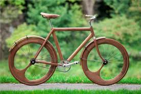

Fiets van Jan Gunneweg
De Nederlandse industrieel ontwerper Jan Gunneweg is geobsedeerd door alles wat van hout is. Van meubels tot woninginrichting tot fietsen, hij experimenteert altijd met manieren om hout naar voren te brengen in design. Deze verbluffende presentatie van houtbewerking is gemaakt van massief notenhout, tot aan de spaken. Ondanks dat het meer als een kunstwerk dan als een machine verschijnt functioneert de fiets volledig en weegt hij 18 kilo.